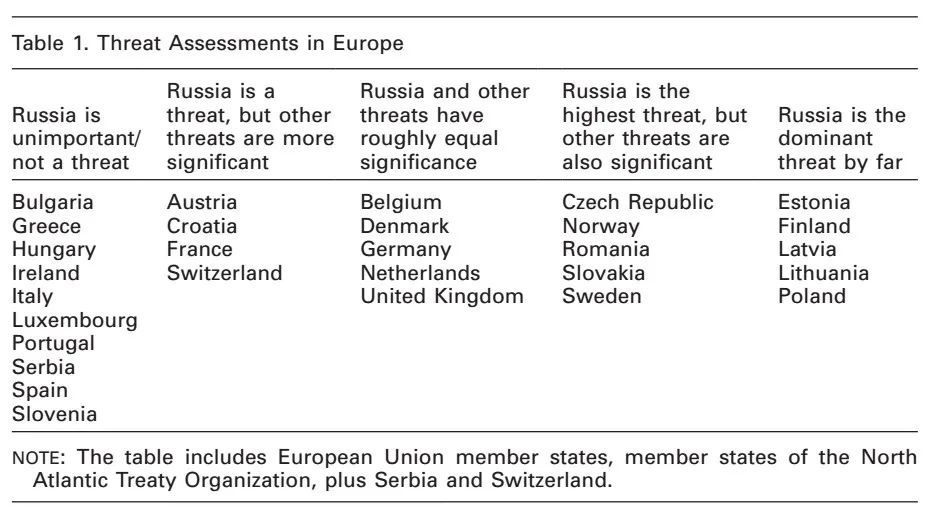
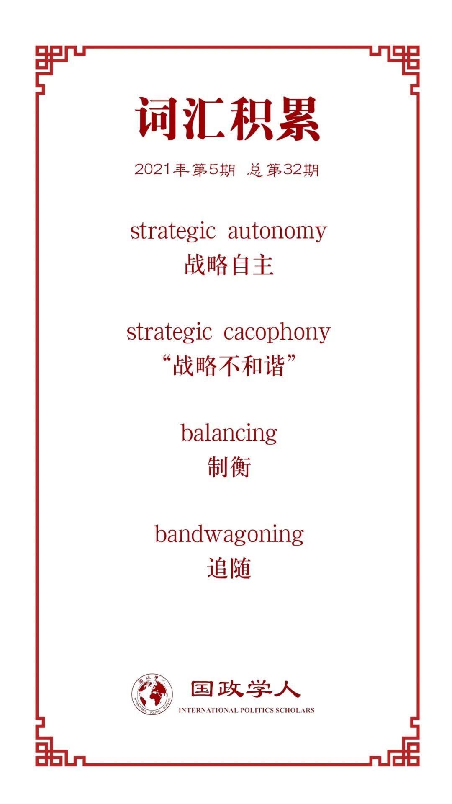

收录于合集

作品简介
【作者】 Hugo Meijer是巴黎政治大学（Sciences Po）国际研究中心的法国科学科研中心研究员以及欧洲安全研究倡议（European Initiative of Security Studies）的负责人。他的主要研究方向为外交政策分析与安全研究，研究议题包括中国崛起背景下的美国霸权重构及其对美国在欧洲与亚洲的同盟体系的影响。
Stephen G. Brooks是达特茅斯学院政府学教授，研究方向为国际安全、美国外交政策、经济与安全的互动以及国际关系理论。他的主要观点是倡导全球范围内“美国第一”（American primacy）的延续，诸项研究成果刊载于 International Security 。
【编译】 阮辰阳（复旦大学国际政治系）
【校对】 李月云
【审核】 杨沛鑫
【排版】 韩柯
【美编 】臧泽华
【来源】 Hugo Meijer, Stephen G. Brooks. “Illusions of Autonomy: Why Europe Cannot Provide for Its Security If the United States Pulls Back.” International Security 2021, 45 (4): 7-43.
【归档】 《国际关系前沿》2021年第5期，总第32期。
期刊简介
《国际安全》( International Security ) 是经过国际和国家安全领域同行评议的顶级学术期刊，其刊发的论文主题广泛，涵盖战争与和平等传统安全问题与环境、人口、人道主义、恐怖主义等新的安全议题。它创刊于1976年，由哈佛大学贝尔弗科学与国际事务中心(Belfer Center for Science and International Affairs at Harvard University)编辑，麻省理工学院出版社(MIT Press)出版，每年四期。根据Journal Citation Reports显示，该杂志2019年影响因子为5.432。
自主的幻想：美国撤退后欧洲无法供给自身安全的原因
Illusions of Autonomy: Why Europe Cannot Provide for Its Security If the United States Pulls Back
Hugo Meijer
Stephen G. Brooks
内容提要
过去十年，由于俄罗斯军事实力的提升及其一系列进攻性的军事行动，欧洲安全局势发生了显著改变。在这一形势下，欧洲开始更多地怀疑美国安全承诺的长期可靠性，同时增强了战略自主的愿望。奥巴马政府的“重返亚洲”及其对欧洲防务分担不足的批评极大地放大了欧洲对于跨大西洋联盟的焦虑。在这一背景下，2016年6月欧盟《全球战略》文件发表，呼吁欧洲实现“战略自主”，特朗普政府对北约的指责更是增强了欧盟自主的愿望。变化的安全局势令我们提出一个重要的反事实（counterfactual）问题：如果美国完全从欧洲撤退，欧洲人能够发展自主防卫能力吗？本文指出，欧洲任何达成战略自主的努力都会被两个相互加强的根本因素阻碍，一是“战略不和谐”（strategic cacophony），即欧洲各国在国防政策的所有领域尤其是在威胁感知方面的显著差异，二是欧洲难以弥补且严重落后的军事能力。因此，即使美国从欧洲完全撤退，欧洲人短期内发展自主防卫能力的可能性也是微乎其微的。
文章导读
过去十年，欧洲安全局势发生了显著改变。俄罗斯相比十年前在军事上强大许多，2014年俄罗斯吞并克里米亚，加之其在乌克兰东部的连续的进攻行动显示了领土性修正主义仍然是欧洲的安全关切。而另一边，美国的安全承诺可信度下降。奥巴马政府的安全防务重心向亚洲转移，同时美国指责欧洲国家在跨大西洋联盟中防务分担不足。特朗普政府对北约的批评更是让欧洲对美国承诺的可靠性与力度感到担忧。在此背景下，2016年6月欧盟出台《全球战略》文件，强烈呼吁欧洲采取战略自主。 欧洲追求战略自主的雄心壮志 及其对 俄罗斯修正主义行为 与 美国安全承诺 的担忧，使作者产生了一个重要的反事实问题： 如果美国完全从欧洲撤退，欧洲人能够发展自主防卫能力吗？
对于这一问题，本文给出的回答是，欧洲要达成战略自主将受两个主要因素的阻碍，一是欧洲的 “战略不和谐” （strategic cacophony），即欧洲各国在国防政策的所有领域尤其是在威胁感知方面的显著差异，二是 欧洲严重落后的防务能力。 这两个因素相互影响，使欧洲无法在短时间内实现防务自主。
如果美国全部撤离欧洲， 北约的消失将导致欧洲范围内没有任何制度框架来保持一定的欧洲防务合作并部分限制欧洲的“战略不和谐”， 欧洲将会脆弱地暴露在俄罗斯之前。本文通过分析得出，即使美国的全部撤离给欧洲带来战略自主的巨大刺激，这也无法改变欧洲“战略不和谐”与能力落后的现状，更不用说美国部分撤离欧洲的情况。因此，如果美国希望欧洲保持稳定，它需要待在欧洲。
下文将从五个部分展开。在第一部分，作者概述了二战后美国在欧洲建立的军事存在为何对现在美国的大战略有如此重大的影响，以及美国从欧洲撤退后的情景。在第二、第三部分，本文将论述阻碍欧洲实现战略自主的两个首要因素。首先，本文将指明欧洲的“战略不和谐”，显示欧洲各国在首要威胁上的分化及其所导致的战略优先差异。其次，本文将探讨欧洲严重的军事能力缺陷，并描绘纠正这种缺陷所面临的四个主要挑战。在第四部分，作者认为无论从常规力量还是核武器领域来看，俄罗斯的实力均超过欧洲，没有任何证据可以支持“限制”论的正确性。最后一部分，本文将讨论上述研究发现对于美国和欧洲的政策意义。
01
美国大战略的辩论：美国在欧洲的军事安全政策
参与到正在进行的美国大战略辩论中的学者，就美国是否需要维持其在欧洲的军事存在这一问题产生尖锐的意见分歧。
“深层次介入”论 的支持者赞成保持美国现有对欧洲的安全承诺，不进行撤退，这些支持者认为美国与欧洲的安全伙伴关系能够促进安全议题以外的合作并增进美国的经济利益。与之相反， “限制”论 的支持者认为美国继续保有北约的成员身份以及其在欧洲的军事存在已不再符合美国利益，现在是时候完全撤离。支持者们鉴于诸多原因赞成“限制”论：第一，与俄罗斯相比，欧洲在人口和经济实力上都占优势；第二，由于战略重心向亚太地区的转移，美国自然会降低欧洲的重要性；第三，美国已经具有长期奉行孤立主义政策的历史经验；第四，美国舆论支持美国撤回以减少国家债务。
02
限制因素一：“战略不和谐”
2014年，俄罗斯吞并克里米亚，打破了欧洲的领土现状。然而，俄罗斯的攻击性行为并未让欧洲联合起来，而是加深了欧洲各国在威胁感知上的严重分歧，欧洲人在包括俄罗斯在内的一系列挑战的优先度排序上意见纷纷。

由表可得，欧洲在防务问题上呈现“战略不和谐”。当一些国家将恐怖主义和地中海区域不稳定列为最高威胁并淡化俄罗斯的威胁时，其他国家将俄罗斯视为首要安全威胁并忽略欧洲南部海岸的扩散性威胁。在这两个极端之间，各国表达了对其核心安全挑战的不同感知。因此总体而言，欧洲各国在威胁评估及随后的战略优先度方面存在巨大差异。
03
限制因素二：军事能力缺陷
欧洲的“战略不和谐”极大程度地恶化了阻碍欧洲达成战略自主的第二个因素，即短期内无法改善的、巨大的军事能力差距。欧洲若想要发展自主的常规防务能力，需要面临以下四项主要挑战：
1、用于常规遏制与防务的武器系统的缺乏
冷战结束后，欧洲国防开支暴跌。从1990年到2020年，欧洲的主战坦克数量减少了85%，装甲运兵车减少64%，火炮减少56%。因此，欧洲甚至缺少最基本的常规遏制与防务能力。导致常规遏制与防务能力下降的关键原因是欧洲的“战略不和谐”。欧洲五大经济体（英国、法国、德国、西班牙和意大利）都位于西欧或南欧，冷战结束后这五国很大程度上轻视领土防务任务。相较而言，中欧与北欧国家尤其是在俄罗斯2014年入侵克里米亚后更倾向于关注领土防务，然而这些国家仅仅是小国或中等国家。
2、现代武器系统应用的复杂性
现代武器系统的有效应用相比以前更具挑战性，这是由一系列原因造成的。
首先，鉴于C4ISR（command, control, communications, computers, intelligence, surveillance, and reconnaissance）系统对收集、处理、传播与利用战斗信息起到的关键作用，该系统需要大量费用进行维护。如果欧洲希望自主制衡俄罗斯，欧洲需要大量的新型C4ISR系统，而这样的系统建设需要很长时间。
其次，欧洲国家缺少能有效操作现代武器系统的专业人员。冷战结束后，欧洲大量减少其军事人员数量，高素质军事人员的招募工作更加困难。而且，军事人员在操纵现代武器之前需要接受极富挑战性的、耗时极长的培训。
最后，现代武器的有效应用取决于军事力量在欧洲范围内快速的、长距离的调动。然而，能力缺陷、法律性或程序性障碍以及基础设施的缺乏使欧洲军事人员与资产的调动和培训十分困难。
3、制度化军事合作的困难
欧洲防务面临的最大挑战之一在于欧盟各成员国军事结构缺乏整合。在北约这一军事合作制度下，美国作为霸权国促进了欧洲各国间的制度化合作，并部分限制住了欧洲的“战略不和谐”，帮助欧洲国家克服协调和集体行动问题。而如果美国撤离，这些问题将会暴露出来并不断深化，进一步阻碍欧洲内部的制度化防务合作。
4、欧洲防务工业基地的碎片化
如果欧洲想实现战略自主，就需要在不依靠美国的情况下构建防务系统。然而，根深蒂固的欧洲防务工业基地的碎片化使这一任务令人畏缩。在需求层面，欧洲各国相较国际武器合作与采购更倾向于防务设备的国内采购。而在供给层面，国内相互分隔的武器系统市场导致了全欧洲防务工业基地的碎片化和非竞争化。这些基地相互重复、效率低下、在地方上产能过剩并且缺乏规模经济。而且，由于工业基地散布在欧洲各地，这种分散的布局不利于如今许多武器系统的规模经济的要求，因此欧洲仍然高度依赖于从美国进口关键零部件与武器系统。
04
对“限制”论的否定
支持“限制”论的学者认为，美国的撤离会加强欧洲对俄罗斯的威胁感知，促使欧洲增加防务投资并建立国家间联盟一起制衡俄国。然而， 即使美国撤离，欧洲各国的威胁感知仍然不同，依旧呈现出“战略不和谐”。 以英国、德国与法国为例，三国在为威胁感知上的不同源于它们不同的历史遗产、地理位置以及独特的本土安全环境。具体而言，在美国撤离后，英国和德国有可能提高对俄罗斯的威胁感知，而法国对俄罗斯的威胁评估将保持不变，仍将更为看重恐怖主义及来自欧洲南部边界的威胁。战略层面上，三国意见也并非相同，如果美国撤离，英国和德国将更倾向于制衡俄罗斯的政策，并为该目的扩展与美国的双边防务合作（尽管两国在资源配置上需要在欧洲东部边界与南部边界之间有所权衡），而法国可能选择与俄罗斯和解而非主导制衡俄国联盟的构建，甚至认为对俄国采取追随政策（bandwagoning）可以获得一些战略优势。此外，欧洲的中等国家和小国由于各自地理位置、历史与战略优先的不同，将进一步增强欧洲在威胁感知与战略应对上的分化。
面对以上质疑，支持“限制”论的学者回应称，即使欧洲各国威胁感知不统一，由于俄罗斯国力衰微，制衡俄罗斯也并非难事。然而， 俄罗斯无论是在常规力量还是在核武器领域都十分强大，是相比这些学者所以为的更加难缠的对手。
在常规力量与遏制方面，俄罗斯的军费开支比通常预计的更为可观。鉴于俄罗斯能够利用国内资源制造更低廉的先进武器，它的军费开支所达到的效果可以超过英国、德国与法国的总和。不仅如此，高水平的军费开支刺激了俄罗斯军事力量的现代化与扩张。此外，俄罗斯的C4ISR系统能力强于欧洲。最后，俄罗斯是单一主权国家，相比有多个主权国家集合而成的欧洲有更高效率，这一点可以从俄罗斯更为统一的指挥中表现出来。
在核遏制方面，俄罗斯在核武器的数量上远超英法之和。而美国撤离后欧洲范围内英法核力量的共享面临极大障碍，因为英法不仅反对为满足东欧国家制衡俄罗斯的需求而将自己的核武器移交出去，而且两国的核遏制合作也因为战略优先度差异与英国脱欧的事态而近乎不可能。
总之，支持“限制”论的学者的种种论述是没有根据的。制衡俄罗斯是一项非常困难的任务，欧洲防务自主的实现仍有待时日。
05
总结：欧洲与美国的可行政策
上述分析对大西洋两岸都具有政策意义。对欧洲而言，政策制定者需要 以巩固跨大西洋联盟为目标，提出一系列易控制的、负担得起的倡议以在短期内加强自身军事能力。 通过这种方式可以慢慢减少欧洲内部的离心力量，而从长期来看欧洲将逐渐形成未来共同合作的基础。对美国而言，学者与政策制定者需要意识到“限制”论的不现实性，并充分认识到， 如果美国希望欧洲稳定，它就要保持在欧洲的力量。
当然，上述分析并不意味着美国永远都不能从欧洲撤离。在理想条件下，欧洲应该在不依赖美国的前提下提升自身的制度性与物质性权力以保卫自己。然而，当欧洲人真正能够在政治和外交政策领域走到一起前，美国与欧洲都要秉持现实主义态度，并意识到美国的离开会造成欧洲的不稳定。
译者评述
本文作者认为，欧洲在美国完全撤离后实现战略自主的障碍之一在于“战略不和谐”，而这种不和谐源于欧洲各国在对俄罗斯威胁的感知差异。有鉴于此，欧洲与美国在北约的结盟仍然是必要的。在这里，我们可以参考斯蒂芬·沃尔特的威胁平衡理论，结合欧洲防务现实，对 威胁感知情况 与 联盟必要性 做出进一步分析。
沃尔特通过对里克尔以及传统均势理论的批判创立了威胁平衡理论，并在《联盟的起源》中阐发了诸多有关威胁与联盟的关键论述。他在书中指出，除 实力分布 之外， 地缘毗邻性 、 进攻实力 和 进攻意图 也是衡量外部威胁的标准，一国通过考虑这些因素，采取制衡或追随强者的联盟策略。
这四个判断威胁的标准可以用来分析欧洲各国对俄罗斯的威胁感知情况。第一，实力分布方面，俄罗斯的军事实力仍然强于欧洲任何一国，甚至在各方面强于英法德三国总和，因而俄罗斯具有制造威胁的基础，尤其会对靠近俄罗斯的、防务能力更弱的小国与中等国家产生潜在威胁。第二，地缘毗邻性方面，东欧与北欧国家由于更为临近俄罗斯，因此相比欧洲其他国家，它们更能感知到威胁，继而采取增强防务的行动。例如前不久，罗马尼亚与波兰总统均表示，他们将加强黑海地区与北约整个东侧边界的防务。第三，进攻实力方面，沃尔特的进攻实力概念特指以可接受的代价威胁另一国的主权与领土完整，而俄罗斯的进攻实力可以通过其在克里米亚和乌克兰东部的行动体现出来，对被侵略的相关国家造成实质性威胁。第四，进攻意图方面，俄罗斯与欧洲已经陷入到典型的“安全困境”中，因此即使是俄罗斯的威慑政策也会被欧洲国家定义为是“侵略的”。
另外，沃尔特将联盟定义为“两个或更多主权国家之间正式的或非正式的安全合作安排”，并强调联盟不局限于条约签署，是一种宽泛相互支持的力量，也包含非正式的安排。根据定义，北约即是欧洲与美国之间在防务领域的正式安全合作安排。对于北约存在的必要性，学界关注的主要问题是： 随着冷战结束与苏联的解体，北约失去了明确的制衡对象，但它为何没有解散？ 这一问题主要从以下四方面进行解释：第一，冷战后的国际实力分布呈现美国单极局势，如果北约解散且美国撤离欧洲，这将助长西欧盟国的独立倾向，不利于美国维持其全球范围内的霸权地位，因此，北约作为美国连接欧洲的纽带得以存续；第二，尽管苏联解体，俄罗斯由于继承了苏联绝大部分军事力量，因此对于欧洲尤其是东欧国家仍然是潜在威胁，美国有意通过北约防止俄罗斯战略回弹；第三，东欧以及巴尔干地区的动荡局势，使北约成员国认识到北约在稳定区域安全局势方面仍然存在需求；第四，北约经冷战发展已高度制度化，因而拥有了“制度惯性”使北约得以延续。由此可见，北约在后冷战时代仍然具有存在的必要并能够发挥实质性作用。
参考文献
[1] 斯蒂芬·沃尔特 著，周丕启 译: 《联盟的起源》，北京：北京大学出版社2007年版。
[2] Stephen Walt, “International Relations: One World, Many Theories,” Foreign Policy , No. 110 (Spring 1998), pp. 29-46.
[3] 新华网:“Romania, Poland to strengthen security of NATO’s eastern flank: presidents”, http://www.xinhuanet.com/english/2021-05/11/c_139937089.htm, 访问时间：2021年5月13日。
词汇整理

文章观点不代表本平台观点，本平台评译分享的文章均出于专业学习之用, 不以任何盈利为目的，内容主要呈现对原文的介绍，原文内容请通过各高校购买的数据库自行下载。
好好学习，天天“在看”
国政学人
支持学术公益与知识传播
微信扫一扫赞赏作者 __赞赏
已喜欢，对作者说句悄悄话
取消 __
发送给作者
发送
最多40字，当前共字
上一页 1/3 下一页
长按二维码向我转账
支持学术公益与知识传播
受苹果公司新规定影响，微信 iOS 版的赞赏功能被关闭，可通过二维码转账支持公众号。